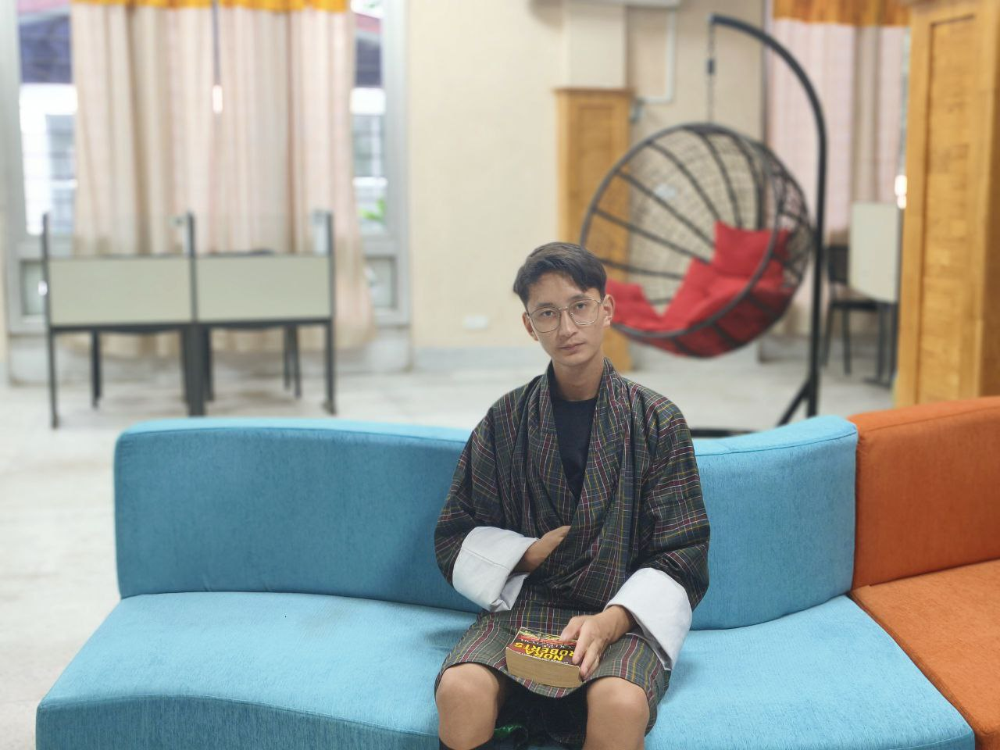
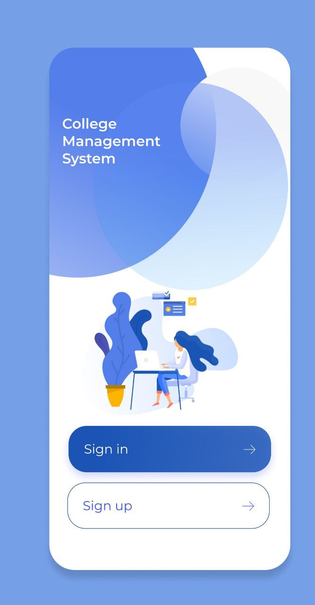
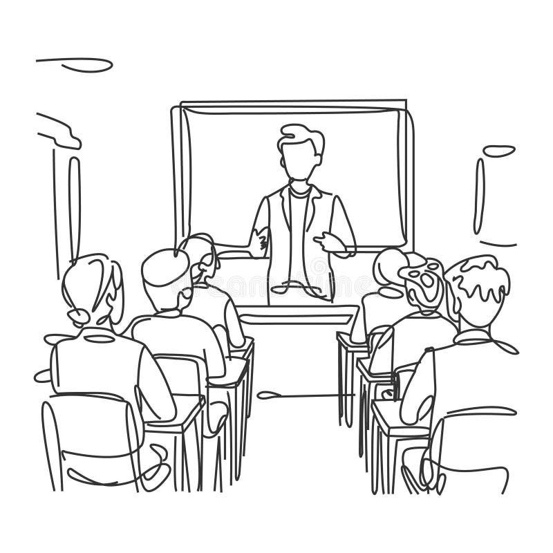

Welcome!
This is the beginning of my portfolio. Here you can find information about my skills, education, projects, and more.
About Me
Hi, my name is Dorji Khandu. rom Merak, a remote village in eastern Bhutan, situated in the Trashigang district, renowned for its rich and unique culture and traditions. Growing up in such a vibrant environment has instilled in me a deep appreciation for my heritage. I enjoy playing online quizzes, which challenge my knowledge and critical thinking skills, and I have a passion for creative arts, where I express myself through drawing and painting. Data visualization fascinates me as it combines creativity with analytical thinking, allowing me to present information in engaging ways. I cherish spending quality time with my parents and friends, whether it’s playing online games or participating in various physical activities like soccer. I strive to be gentle and interactive with my environment, embracing every opportunity to learn and grow through my experiences. I’m a passionate web developer who loves turning ideas into interactive digital experiences. I'm constantly learning new technologies to expand my skill set.
This is a photo of me reading in library.
My Education Journey
Merak Primary School (Class PP-6)
A foundational school where I started my educational journey, fostering my early love for learning like reading,writng and speaking also the formative memories of playtime and simple joys.
Dungtse Central School (Class 7-10)
Developed essential skills and knowledge during middle school years in a supportive environment like learning how to manage time and organize work with the introduction to subjects like history, geography, and basic science. I also faced challenges such as peer pressure, academic demands, and social dynamics helps students build resilience and coping strategies.
Jigme Sherubling Central School (Class 11-12)
High school education with a focus on academic excellence and extracurricular activities. High school is a time for increased responsibility, where students balance academics with extracurriculars and social lives, fostering a sense of independence. Opportunities to take on leadership roles in clubs or sports teach valuable lessons in responsibility, teamwork, and communication. Exposure to diverse cultures and perspectives through classmates and curriculum enhances awareness of social issues and global perspectives.

Samtse College of Education (3rd year)
Currently pursuing higher education, expanding my knowledge and preparing for a career. For me College offers opportunities to form deep connections with peers, often leading to lifelong friendships and professional networks. College is also a transformative period for self-discovery, where i can reflect on my values, passions, and career aspirations, setting the stage for their future paths. .
Skills & Tools
- Python
- HTML
- CSS
- Java
- MySQL
- CapCut
Constantly honing my skills with hands-on coding.
My Projects
college event management system
This system helps automating tasks such as admissions, attendance, and grading, while centralizing data management for easy access to student records and financial information. It enhances communication among students, faculty, and administration, improves the overall student experience by providing easy access to course materials and schedules, and facilitates data analytics for informed decision-making. Additionally, it aids in resource allocation and compliance with regulatory requirements, ultimately fostering a more efficient and effective educational environment.
Prototype of the college management system.
Whiteboard Animation
Currently working on animation projects using whiteboard to create characters and scenes in interactive ways.
Screenshot from one of my whiteboard animation.
Get in Touch
If you would like to get in touch with me, feel free to send me an email at: